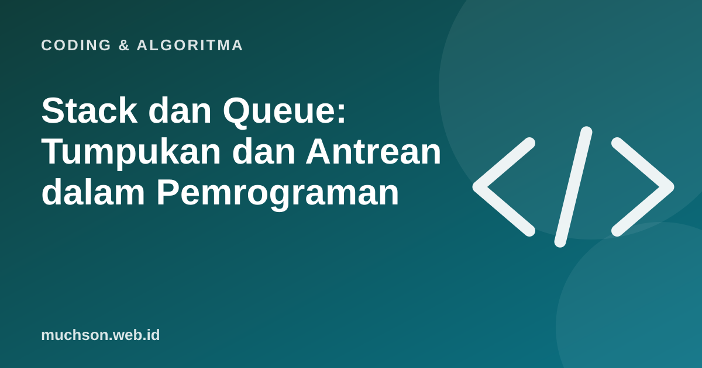

Beranda › Artikel › Coding & Algoritma
Coding & AlgoritmaStack dan Queue: Tumpukan dan Antrean dalam Pemrograman
Dua struktur data paling dasar ini tampak sederhana, tetapi bekerja di balik banyak hal: tombol undo, riwayat halaman browser, antrean cetak, dan cara komputer menjalankan fungsi. Kuncinya satu aturan: siapa yang keluar lebih dulu.

Dua aturan yang berbeda
Contoh pemakaian nyata
Kode Python
# Stack: pakai list
stack = []
stack.append("A") # push
stack.append("B")
print(stack.pop()) # B (terakhir masuk)
# Queue: pakai deque agar cepat di kedua ujung
from collections import deque
q = deque()
q.append("A") # enqueue
q.append("B")
print(q.popleft()) # A (pertama masuk)Tips Python
Pada Python, list sudah cocok untuk stack. Untuk queue, gunakan collections.deque karena menghapus elemen pertama dari list biasa lambat pada data besar.
Tanya jawab
Apa itu call stack?
Tumpukan yang dipakai komputer untuk melacak fungsi yang sedang dijalankan. Setiap pemanggilan fungsi ditumpuk, lalu dikeluarkan saat selesai.
Apa itu stack overflow?
Terjadi saat tumpukan pemanggilan fungsi terlalu dalam, misalnya rekursi tanpa titik berhenti.
Apakah ada struktur lain yang mirip?
Ya, misalnya deque (antrean dua arah) dan priority queue (yang paling penting keluar lebih dulu).